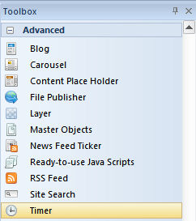
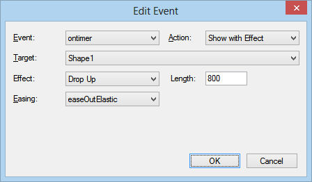
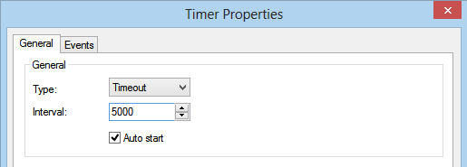
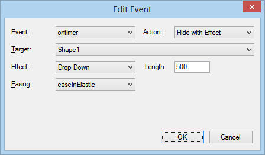
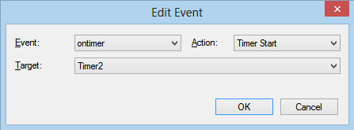
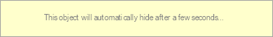

An introduction to Timers
The Timer object makes it possible to trigger actions based on timer events. For example show or hide an object after x milliseconds.
Timers can also start/stop other timers! All event actions are supported (animate, show/hide, rotate, media, JavaScript etc).
In this tutorial we will use the Timer object to show and hide an object.
The Timer object makes it possible to trigger actions based on timer events. For example show or hide an object after x milliseconds.
Timers can also start/stop other timers! All event actions are supported (animate, show/hide, rotate, media, JavaScript etc).
In this tutorial we will use the Timer object to show and hide an object.
The Timer object supports two types:
• Interval, executes a function, over and over again, at specified time intervals.
• Timeout, executes a function, once, after waiting a specified number of milliseconds.
The Interval property specifies the interval in milliseconds.
Auto start, specifies whether to automatically start the timer. If this option is not enabled you can start the timer through events (for example
on click of a button).
Show/hide an object with a timer
Timers are often used to show or hide objects. In this example we will show an object with a timer and then hide it again after a few seconds.
Step 1
Add a shape (or any other object). Take note of the ID of the Shape. If it's the first shape on the page then it will usually be called 'Shape1'.
For this example we have added some text to the shape: This message will hide after a few seconds...
Step 2
Open the Object Manager and uncheck 'Visible' for the Shape. This will initially hide the object on page load.
Step 3
Add a timer object (Timer1). Set the Type to 'Timeout' and 'Interval' to 5000 (= 5 seconds).
Step 4
Click the 'Events' tab and add an event to show the shape. Select the 'Show with effect' action and set the target to 'Shape1'.
Timers are often used to show or hide objects. In this example we will show an object with a timer and then hide it again after a few seconds.
Step 1
Add a shape (or any other object). Take note of the ID of the Shape. If it's the first shape on the page then it will usually be called 'Shape1'.
For this example we have added some text to the shape: This message will hide after a few seconds...
Step 2
Open the Object Manager and uncheck 'Visible' for the Shape. This will initially hide the object on page load.
Step 3
Add a timer object (Timer1). Set the Type to 'Timeout' and 'Interval' to 5000 (= 5 seconds).
Step 4
Click the 'Events' tab and add an event to show the shape. Select the 'Show with effect' action and set the target to 'Shape1'.

Step 5
Add a second timer (Timer2). This timer will be used to hide the Shape.
Set the Type to 'Timeout' and 'Interval' to 5000.
Uncheck 'Auto start' so the timer will not start automatically!
Step 6
Click the 'Events' tab and add an event to hide the shape: Select the 'Hide with effect' action and set the target to 'Shape1'.
Add a second timer (Timer2). This timer will be used to hide the Shape.
Set the Type to 'Timeout' and 'Interval' to 5000.
Uncheck 'Auto start' so the timer will not start automatically!
Step 6
Click the 'Events' tab and add an event to hide the shape: Select the 'Hide with effect' action and set the target to 'Shape1'.



Step 7
Go back to the settings of Timer1 and add another event. This one will start the second timer (Timer2).
Go back to the settings of Timer1 and add another event. This one will start the second timer (Timer2).

Now preview the page in the browser to view the results: the shape will be displayed after 5 seconds and then disappear after another 5 seconds.
